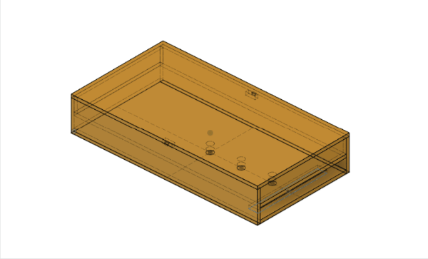
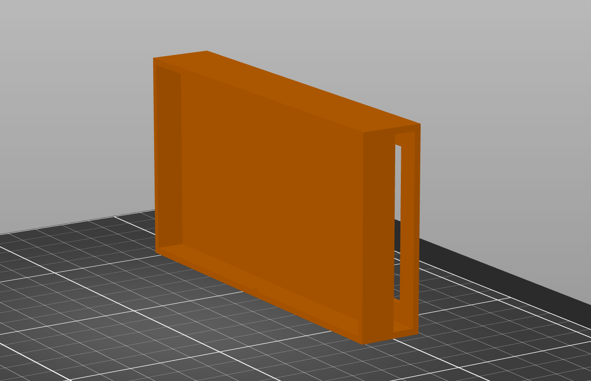
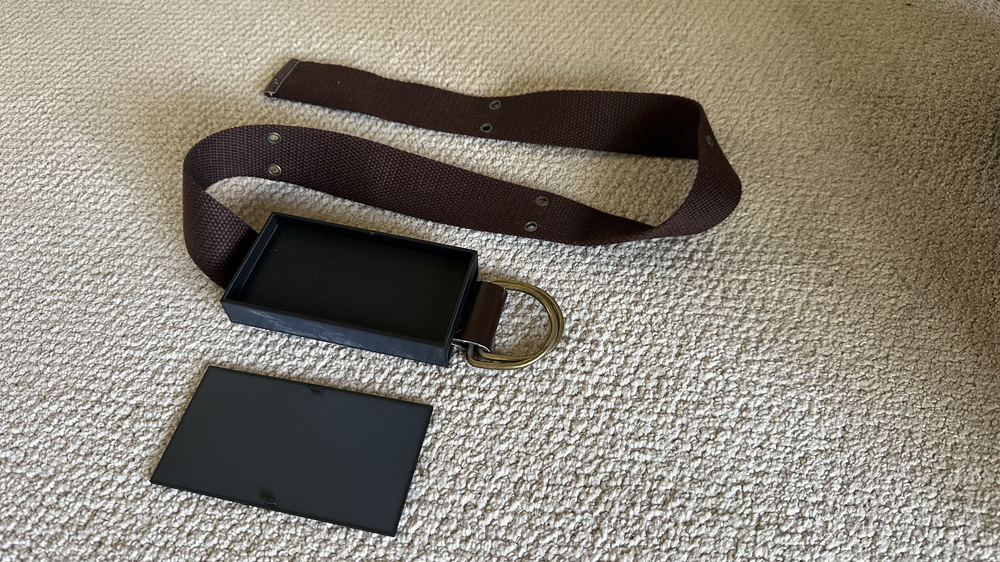
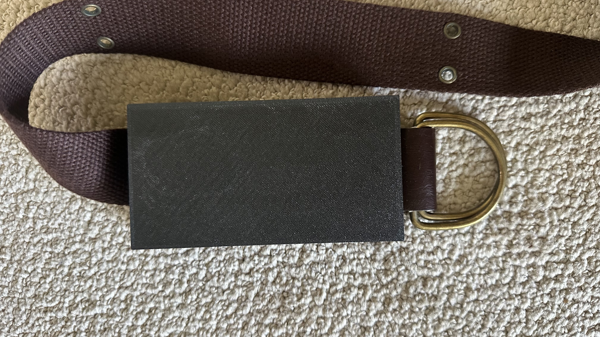
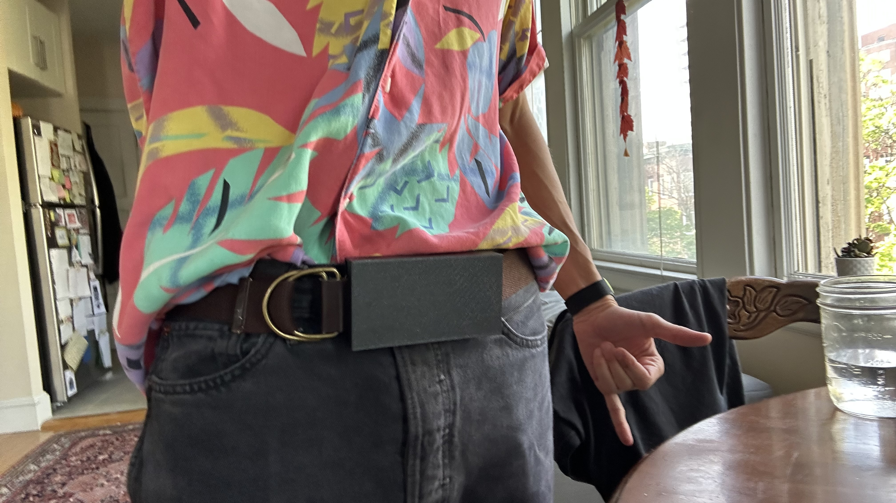

This part of the project is relatively straight forward: make a comically large belt buckle (read: box) to house the components. My first deign gives me lots of space to play with -- almost a full centimeter of depth, and 10cm x 60cm of surface area. Inside this box will go the:
I'll also need to make an on/off switch, as well as a "calibrate" button. The latter will be a little tricky, as I need to make sure that the ESP32 is in a state where it can read the compass and calibrate it.
This was a tricky one to print because it's flat but cantilevered -- so I actually printed it standing upright (as if it's being worn on a body) so that I wouldn't have to clear out support material from the inner cavity, which would be brutal.

Stunningly, the tiny notches I made to hold the buckle face on totally worked! They probably need to be a bit bigger in order to be more robust, and the holes in the buckle back need to be deeper too; but the design works well for this iteration.


The final design can simply have those notches on all sides, not just the top and bottom, because I won't need to be accessing all the components so frequently. The next version also needs holes cut for the on/off switch, the calibrate button, and a charger. I have no idea how to integrate a li-po charger into this, because I hear it's tricky, but everything's tricky until you figure it out. Onwards!
